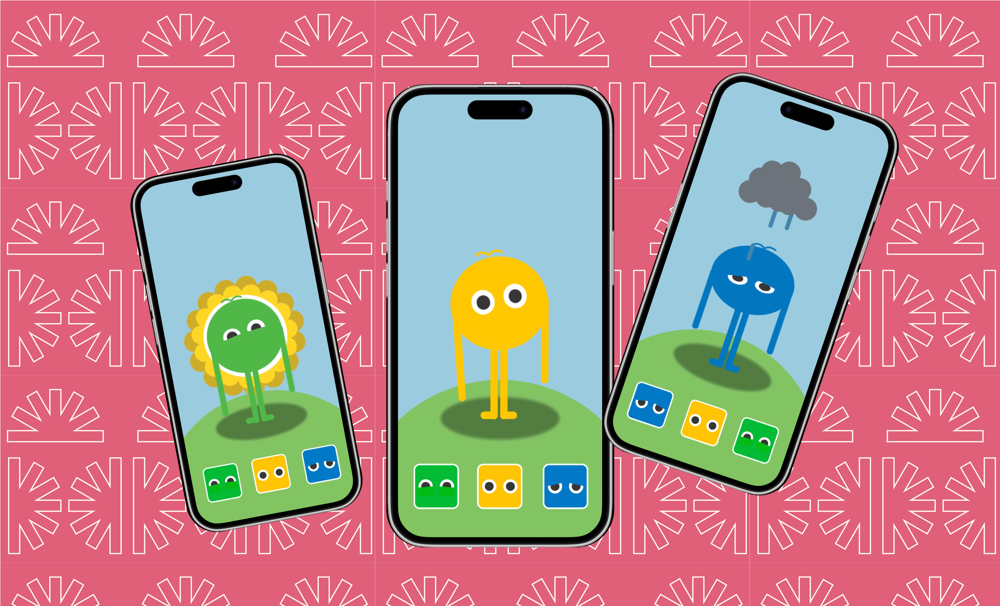
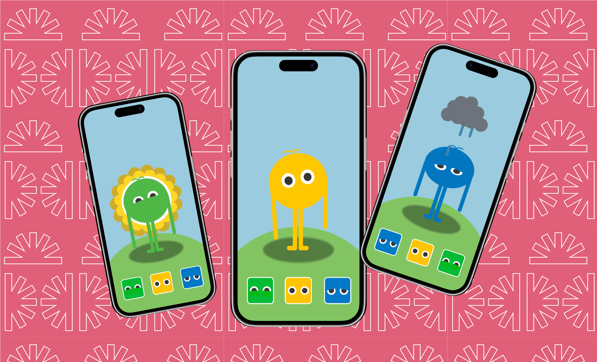

October '24
Another short project I've made for the minor Visual Interface Design at the University of Applied Sciences Amsterdam. In the span of 1.5 weeks I tought myself how to use After Effects and made this small animation.
Jump to project
 Go back

Go back

Animation
October '24
Another short project I've made for the minor Visual Interface Design at the University of Applied Sciences Amsterdam. In the span of 1.5 weeks I tought myself how to use After Effects and made this small animation.
Jump to project
Learning to animate by making a cute animation based on moods.
ClubSafe is dedicated to improving the safety of students and young adults in clubbing environments. Through a comprehensive approach, the organization promotes responsible behavior, implements safety protocols, and provides resources for informed decision-making. By addressing the unique challenges of this demographic, ClubSafe plays a crucial role in fostering a secure and enjoyable nightlife experience.
ClubSafe is a Non-profit organisation funded by the Dutch Ministry of Health, Welfare & Sport. In addition to a dedicated core team comprising dozens of individuals, numerous volunteers contribute daily to enhance the safety of the nightlife, making it a better experience for everyone.
The assignment was as follows:
As a duo, you will collaboratively conceive a business. The business should 'sell' at least two things: itself and a service or product. Choose a topic, product, or service that you have an affinity for. You are forming a small enterprise, sole proprietorship, or start-up. Your objective is to design content for your company's website that aligns with the business goals, the users (target audience), user goals, and user queries.

Scince scroll-jacking is a pretty hard concept to succesfully prototype. I mimicked this effect by using After Effects. This way I could showcase the effect without the hassle of trying to code or prototype it. Have a look a the video below!
Go back up